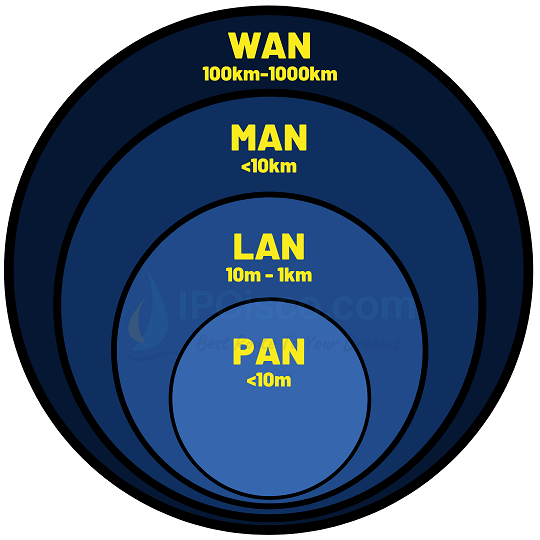
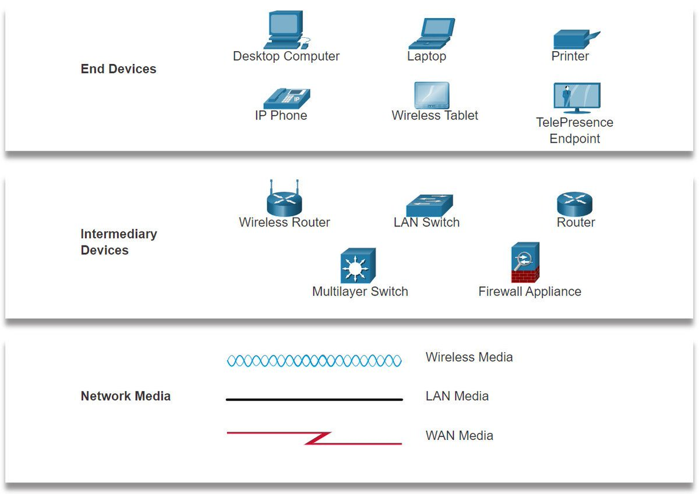
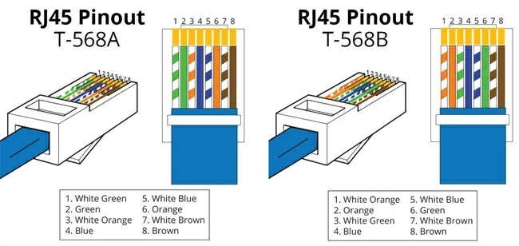
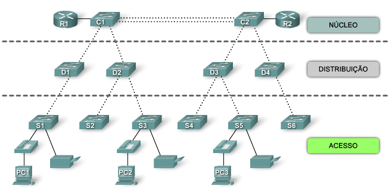

Breve história
A história da rede de computadores remonta ao surgimento dos primeiros computadores na década de 1940. Inicialmente, os computadores eram máquinas isoladas que realizavam cálculos e processamentos independentes. No entanto, com o avanço da tecnologia e a necessidade de compartilhar informações e recursos entre diferentes computadores, surgiram os primeiros esforços para a criação de redes de computadores.
A ARPANET, desenvolvida nos Estados Unidos na década de 1960, foi uma das primeiras redes de computadores a utilizar a comutação de pacotes, o que permitia a transferência eficiente de dados entre diferentes computadores conectados. Com o tempo, essa rede evoluiu e deu origem à Internet, que se tornou uma rede global de proporções gigantescas.
A Internet revolucionou a forma como as pessoas se comunicam, trabalham, aprendem e se divertem, proporcionando um acesso rápido e fácil a informações, serviços e recursos de todo o mundo. A história da rede de computadores é marcada por inovações contínuas, como o desenvolvimento de protocolos de comunicação, a criação da World Wide Web e o surgimento de redes sem fio, que possibilitaram a conexão em qualquer lugar.
Orgão regulamentador
No Brasil, o órgão regulamentador das redes é a Agência Nacional de Telecomunicações (ANATEL). A ANATEL é uma autarquia federal responsável por regular, fiscalizar e promover o desenvolvimento das telecomunicações no país.
No contexto das redes, a ANATEL tem como objetivo principal garantir a qualidade, a eficiência e a disponibilidade dos serviços de comunicação, incluindo a internet e as redes de telefonia fixa e móvel. Ela estabelece normas e padrões técnicos, realiza licenciamento de empresas provedoras de serviços de rede, monitora a qualidade dos serviços oferecidos, e atua na defesa dos direitos dos consumidores.
Além disso, a ANATEL também é responsável por gerenciar o espectro de radiofrequências utilizado pelas redes de comunicação, regulando a sua utilização e evitando interferências entre diferentes serviços e operadoras. Em resumo, a ANATEL desempenha um papel fundamental na regulação e na promoção do setor de redes de telecomunicações no Brasil.
Além da ANATEL, existe outro órgão responsável pela regulamentação das redes no Brasil, que é o Comitê Gestor da Internet no Brasil (CGI.br). O CGI.br é um órgão multissetorial e consultivo, composto por representantes do governo, da sociedade civil, do setor empresarial e da comunidade acadêmica.
Ele tem como principal função formular diretrizes estratégicas para o desenvolvimento da Internet no país. O CGI.br atua na definição de políticas públicas relacionadas à infraestrutura, governança, segurança, acesso e uso da Internet no Brasil. Além disso, o CGI.br é responsável pela gestão do registro de domínios .br e pela coordenação do sistema de nomes de domínio no país. Sua atuação visa promover o acesso universal à Internet, a inclusão digital, a liberdade de expressão e a privacidade dos usuários, entre outros aspectos relacionados ao uso e à regulamentação das redes no Brasil.
Tipos de rede
| Tipo | Descrição |
|---|---|
| PAN | PAN (Personal Area Network - Rede de Área Pessoal): Rede de comunicação de curto alcance que conecta dispositivos pessoais, como smartphones e laptops, em uma área limitada. |
| CAN | CAN (Campus Area Network - Rede de Área do Campus): Rede que abrange uma área geográfica limitada, como um campus universitário ou complexo de escritórios, permitindo a conectividade entre diferentes locais. |
| LAN | LAN (Local Area Network - Rede Local): Rede que abrange uma área geográfica pequena, como um escritório ou residência, permitindo a conexão e o compartilhamento de recursos entre dispositivos próximos. |
| MAN | MAN (Metropolitan Area Network - Rede Metropolitana): Rede que cobre uma área metropolitana, conectando várias LANs e fornecendo conectividade de alta velocidade para instituições e empresas dentro da região. |
| WAN | WAN (Wide Area Network - Rede de Longa Distância): Rede que abrange uma área geográfica ampla, como um país ou continente, conectando redes locais e permitindo comunicação e compartilhamento de recursos em grandes distâncias. |
Topologia de redes
Uma topologia de rede é a estrutura física ou lógica na qual os dispositivos de rede, como computadores, servidores, roteadores, switches e outros dispositivos de rede, estão conectados uns aos outros. Ela define como os nós da rede estão organizados, como os dados fluem entre eles e como as conexões físicas ou lógicas são estabelecidas.
Existem várias topologias de rede comumente utilizadas, cada uma com suas próprias características e benefícios. As topologias mais comuns são:
| Topologia em barramento | Nesta topologia, todos os dispositivos são conectados a um único cabo, conhecido como "barramento". Os dados são transmitidos por esse cabo e recebidos por todos os dispositivos conectados a ele. É uma topologia simples, mas pode ser vulnerável a falhas, pois se o cabo for danificado, toda a rede pode ser afetada. |
| Topologia em estrela | esta topologia, todos os dispositivos são conectados a um único dispositivo central, como um switch ou hub, formando uma configuração em formato de estrela. Cada dispositivo tem uma conexão direta com o dispositivo central, o que facilita a detecção e o isolamento de falhas. No entanto, se o dispositivo central falhar, toda a rede pode ser afetada. |
| Topologia em anel | Nesta topologia, os dispositivos são conectados em um circuito fechado, formando um anel. Cada dispositivo tem uma conexão com os dispositivos adjacentes, permitindo que os dados sejam transmitidos em uma direção específica ao longo do anel. Uma falha em qualquer dispositivo pode interromper toda a comunicação na rede. |
| Topologia em malha | esta topologia, todos os dispositivos estão conectados entre si, formando uma rede totalmente conectada. Cada dispositivo tem uma conexão direta com todos os outros dispositivos. Isso cria uma rede robusta e redundante, na qual várias rotas podem ser usadas para enviar dados. No entanto, é uma topologia complexa e requer um grande número de conexões. |
| Topologia em árvore | Esta topologia combina características da topologia em estrela e da topologia em barramento. Os dispositivos são organizados em uma estrutura hierárquica em forma de árvore, com dispositivos centrais conectados a dispositivos secundários e assim por diante. Isso permite a criação de redes escaláveis e eficientes. |
Representação de redes
Componentes
| Componente | Descrição |
|---|---|
| Computadores/Dispositivos | São os equipamentos utilizados pelos usuários para se conectar à rede. Podem incluir desktops, laptops, smartphones, tablets e outros dispositivos eletrônicos. |
| Servidores | São computadores de alta capacidade projetados para fornecer recursos e serviços específicos na rede. Eles podem fornecer serviços como armazenamento de arquivos, hospedagem de sites, compartilhamento de impressoras, banco de dados, e-mail, entre outros. |
| Roteadores | São dispositivos responsáveis por encaminhar os pacotes de dados entre diferentes redes. Eles determinam a melhor rota para enviar as informações de um dispositivo para outro, ajudando a conectar redes locais (LANs) a redes maiores, como a Internet. |
| Switches | São dispositivos que conectam vários dispositivos em uma rede local (LAN). Eles permitem que os dispositivos se comuniquem entre si, direcionando os pacotes de dados para o destino correto. |
| Firewalls | São sistemas de segurança que protegem a rede contra acessos não autorizados, monitorando e controlando o tráfego de entrada e saída. Eles ajudam a prevenir ataques maliciosos e garantem a integridade dos dados na rede. |
| Cabos e Conectores | São os meios físicos utilizados para transmitir os dados na rede. Isso inclui cabos de rede (como cabos Ethernet), conectores (como RJ-45) e outros meios de transmissão, como fibra ótica. |
| Protocolos de Rede | São conjuntos de regras e padrões que definem como os dispositivos na rede se comunicam e trocam informações. Exemplos populares de protocolos de rede incluem TCP/IP (Transmission Control Protocol/Internet Protocol) e DNS (Domain Name System). |
| Modems | São dispositivos que permitem a conexão da rede local com uma rede externa, como a Internet. Eles convertem os sinais digitais dos dispositivos em sinais analógicos adequados para transmissão através de linhas telefônicas ou cabos coaxiais, e vice-versa. |
| Access Points (Pontos de Acesso) | São dispositivos que permitem que dispositivos sem fio se conectem à rede local. Eles criam uma rede sem fio (Wi-Fi) para permitir que os dispositivos se conectem e acessem os recursos da rede. |
| Sistemas de Gerenciamento de Rede | São softwares utilizados para monitorar e gerenciar a rede, permitindo a configuração, monitoramento e solução de problemas de dispositivos de rede, como roteadores, switches e firewalls. |
| Zona Desmilitarizada (DMZ) | É uma área separada e segmentada dentro da rede que atua como uma camada intermediária de segurança entre a rede interna e a rede externa (geralmente a Internet). A DMZ é projetada para hospedar serviços que precisam ser acessíveis externamente, como servidores web, servidores de e-mail ou servidores de FTP. Ela é configurada com restrições de segurança adicionais para proteger a rede interna em caso de ataque direcionado a um desses serviços na DMZ. A DMZ é geralmente implementada usando firewalls e regras de acesso específicas para controlar o tráfego entre a rede interna, a DMZ e a rede externa. |
Cabo RJ45
Cabo de fibra óptica

Exemplos de redes
